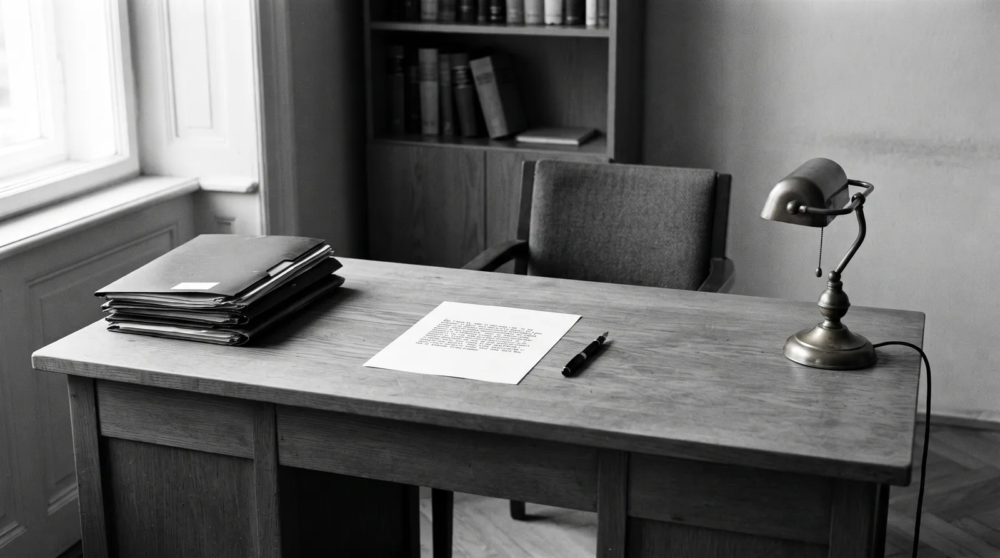

Prawo rodzinne
Rozwód z orzeczeniem o winie i bez, separacja, alimenty na dziecko i na małżonka, władza rodzicielska, kontakty z małoletnimi, podział majątku wspólnego.
Kontakty ustalone na bieżąco co drugi weekend, od piątku godz. 17:00.

Kancelaria adwokacka w Pruszkowie. Prawo rodzinne, spadkowe, cywilne i gospodarcze. Dla osób prywatnych i dla firm, w Pruszkowie i w Warszawie.
Strony ustalają, że kontakty z małoletnim odbywać się będą w terminach uzgodnionych na bieżąco w co drugi weekend, od piątku godz. 17:00.
Prowadzimy sprawy rodzinne, spadkowe, cywilne i gospodarcze — w Pruszkowie i w Warszawie.

Pomoc prawna dopasowana do sprawy, nie do cennika: porada, pismo procesowe, reprezentacja przed sądem, organem administracji i organem egzekucyjnym.
Rozwód z orzeczeniem o winie i bez, separacja, alimenty na dziecko i na małżonka, władza rodzicielska, kontakty z małoletnimi, podział majątku wspólnego.
Kontakty ustalone na bieżąco co drugi weekend, od piątku godz. 17:00.
Stwierdzenie nabycia spadku, dział spadku, zachowek, odrzucenie spadku obciążonego długami, wykonanie zapisu i polecenia.
Spadek dzielimy po równo zgodnie z działem spadku, z rozliczeniem darowizn.
Sprawy o nieruchomości, zasiedzenie, księgi wieczyste, odszkodowania, ochrona dóbr osobistych, windykacja należności, opiniowanie i przygotowanie umów.
Wykonawca usunie wady w rozsądnym terminie w 14 dni od zgłoszenia.
Bieżąca obsługa przedsiębiorców, negocjowanie umów handlowych, rejestracja spółek, fundacji i stowarzyszeń w KRS, uchwały i protokoły organów spółek.
Umowa obowiązuje do odwołania do 31 grudnia, z 3-miesięcznym wypowiedzeniem.
Roszczenia ze stosunku pracy: wynagrodzenie, godziny nadliczbowe, przywrócenie do pracy, odszkodowanie za wadliwe wypowiedzenie. Regulaminy po stronie pracodawcy. Odwołania od decyzji ZUS.
Wypowiedzenie wskazuje przyczyny organizacyjne likwidację stanowiska nr 4 z dnia 12 maja.
Obrona podejrzanych i oskarżonych w postępowaniu przygotowawczym i sądowym, reprezentacja pokrzywdzonych i oskarżycieli posiłkowych, prywatne akty oskarżenia.
Zarzut obejmuje działanie na szkodę spółki czyn z art. 296 § 1 k.k. w dniach 3–7 marca.
Trzy rzeczy, które ustalamy na początku, żeby nie było niespodzianek ani co do szans, ani co do kosztów.
Jeśli ocena szans wypada źle, usłyszą to Państwo na pierwszym spotkaniu, a nie po roku postępowania.
Ryczałt za sprawę albo stawka godzinowa, przedstawione na piśmie zanim podpiszemy pełnomocnictwo.
Krótka informacja po rozprawie i po każdym doręczonym piśmie: co się wydarzyło i jaki jest następny krok.
Jedna osoba od pierwszej rozmowy do prawomocnego wyroku. Sprawy nie przechodzą między prawnikami.
Praktyka obejmuje sprawy cywilne i gospodarcze, w szczególności odpowiedzialność za szkodę, sprawy majątkowe i naruszenia zobowiązań umownych, a także sprawy spadkowe, rodzinne i małżeńskie.
Absolwentka Wydziału Prawa, Prawa Kanonicznego i Administracji Katolickiego Uniwersytetu Lubelskiego oraz studiów podyplomowych z prawa podatkowego w Szkole Głównej Handlowej w Warszawie. Od 2010 roku członek Okręgowej Izby Adwokackiej w Warszawie, gdzie odbyła aplikację adwokacką i uzyskała uprawnienia zawodowe.
Doświadczenie zdobywała w kancelarii adwokackiej, kancelarii radcy prawnego oraz pracując w dużej firmie telekomunikacyjnej, stąd praktyka obejmująca zarówno klientów indywidualnych, jak i stałą obsługę przedsiębiorców.
W sprawach wymagających innych specjalizacji Kancelaria współpracuje z adwokatami i radcami prawnymi, a także z rzecznikami patentowymi, doradcami podatkowymi, biegłymi rewidentami i notariuszami.
Trzy kroki, zanim cokolwiek trafi do sądu.
Spotkanie w kancelarii albo rozmowa telefoniczna. Ustalamy stan faktyczny i oceniamy szanse. Konsultacja jest odpłatna, a jej koszt zaliczamy na poczet wynagrodzenia, jeśli podejmujemy się sprawy.
Przedstawiamy zakres pracy i wynagrodzenie. Dopiero po akceptacji podpisujemy pełnomocnictwo i przejmujemy korespondencję w sprawie.
Reprezentacja przed sądem, organami administracji i organami egzekucyjnymi, z bieżącą informacją po każdej rozprawie i każdym doręczonym piśmie.
Adwokat przyjmuje w godzinach podanych obok. Istnieje możliwość umówienia się telefonicznie na inny, dogodny termin.
| Poniedziałek | 9:00 – 18:00 |
| Wtorek | 9:00 – 16:00 |
| Środa | 9:00 – 16:00 |
| Czwartek | 9:00 – 18:00 |
| Piątek | 9:00 – 14:00 |
Kancelaria Adwokacka adw. Sabina Pikula
ul. Kraszewskiego 17, 05-800 Pruszków
+48 601 130 842
biuro@adwokatpikula.pl